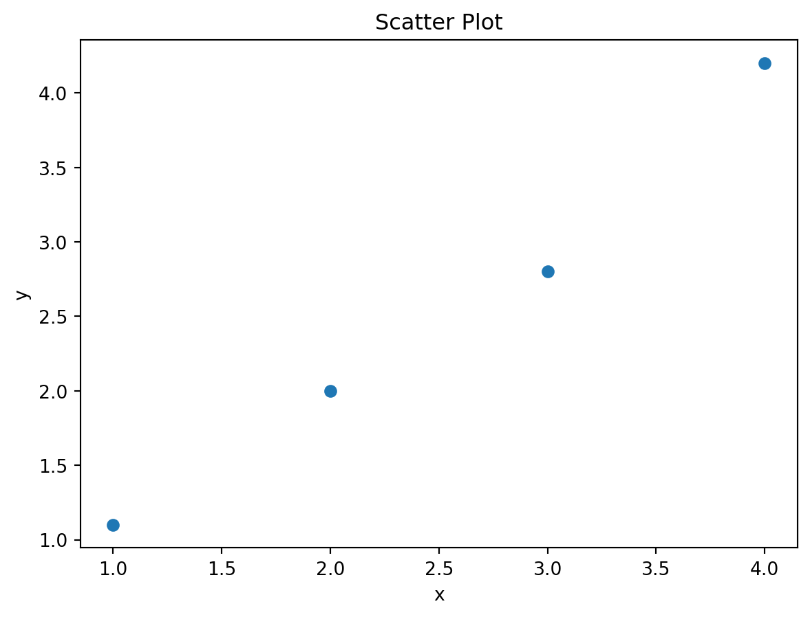
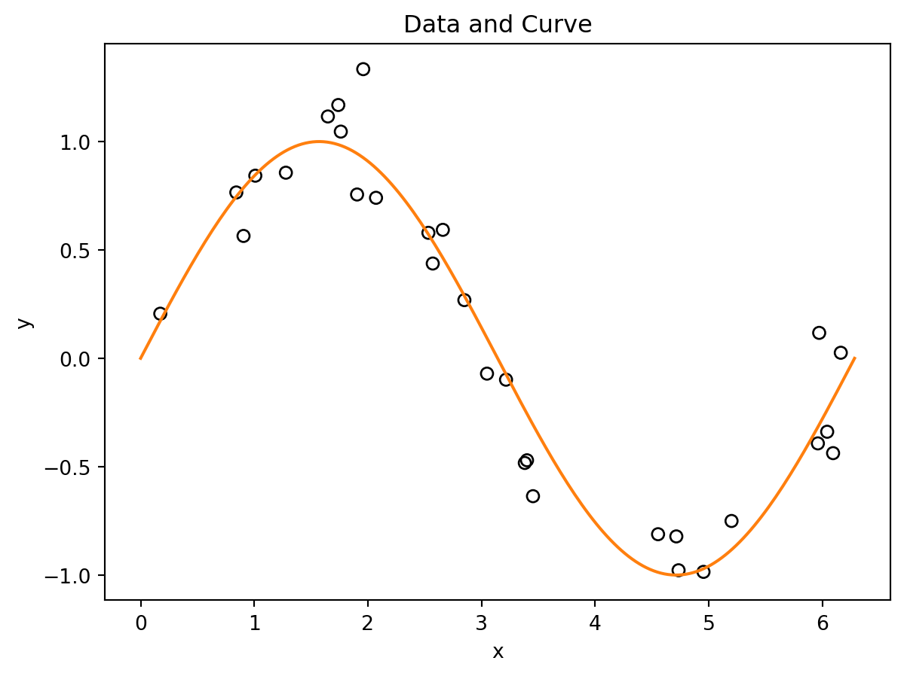
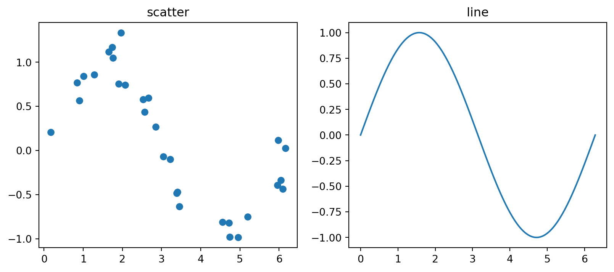

# This is a comment
x = 10 # assignment uses =
a, b = 2, 3
a + b # last expression is automatically displayed5sklearnThis note introduces only the Python syntax needed for the rest of these notes. The goal is not to cover Python as a full programming language. The goal is to make code using numpy, matplotlib, and sklearn readable.
A Python code chunk looks like this:
# This is a comment
x = 10 # assignment uses =
a, b = 2, 3
a + b # last expression is automatically displayed5When a code cell is executed, the value of the last expression is automatically displayed. Any explicit output commands, such as print(), will also produce output.
Use # comments only for short notes that help explain the code. Detailed explanations and discussion should be written in Markdown cells, where they are easier to read and maintain.
Python uses indentation to mark code blocks. R uses braces {}; Python uses indentation.
For example, a for loop:
for k in [1, 3, 5]:
print(k)1
3
5The indented block belongs to the loop. These notes use loops only when they are helpful for plotting or comparing models.
if and forThe logic of if statements and for loops is straightforward. When using them, pay attention to indentation. A colon : indicates the beginning of an indented code block.
x = 1
if x == 2:
print('good')
else:
print('not good')not goodfor k in range(4):
print(k)0
1
2
3This is not an object-oriented programming course, so don’t worry too much about the details. The important idea is the distinction between a function, a class, and an object created from a class.
round(3.14, 2)object.method()Example in scikit-learn:
model = LinearRegression()Here
LinearRegression is the class;LinearRegression() creates a linear regression model object;model.model.fit(X_train, y_train)
coef = model.coef_Here
fit() is method;coef_ stores information about the fitted model;object.method(...);object.attribute.In almost all scikit-learn code, you should work with objects rather than classes. A common mistake is to pass a class where an object is required.
pipe = make_pipeline(StandardScaler, LinearRegression) # wrong
pipe = make_pipeline(StandardScaler(), LinearRegression()) # correctThe same idea applies to most scikit-learn components, including transformers, models, and pipelines. In general, if something is used as a step in a pipeline, you should create an object by adding ().
. (Dot)
The meaning of . is different in Python and R.
. is used to access methods and attributes of an object.model.fit(X, y)
model.coef_. is usually just part of a variable or function name.my.variable <- 1Do not interpret dots in R names as object access.
Python packages are loaded with import.
The usual imports in these notes are:
import numpy as np
import pandas as pd
import matplotlib.pyplot as pltThe names on the right are aliases:
numpy is used as np;pandas is used as pd;matplotlib.pyplot is used as plt.After importing a package this way, you access its functions using the package name, e.g.
np.array([1, 2, 3])pd.DataFrame({"x": [1, 2, 3]})plt.plot([1, 2, 3], [4, 5, 6])When a package is imported with import ... as ..., you must use the alias to access its functions and classes instead of the original name.
Sometimes only specific functions or classes are imported.
from sklearn.linear_model import LinearRegression
from sklearn.model_selection import train_test_splitThese objects can then be used directly.
model = LinearRegression()After from sklearn.linear_model import LinearRegression, you may use LinearRegression() directly, but other objects from sklearn.linear_model are not automatically imported.
Python has several basic data types.
x = 3 # integer
y = 2.5 # float
name = "tree" # string
flag = True # BooleanUse type() to check the type of an object.
type(y)floatPython is case-sensitive. x and X are different objects.
A list is an ordered collection of objects. Lists are commonly used to store variable names, column names, or collections of parameter values.
| Purpose | Example | Explanation |
|---|---|---|
| Create a list | features = ["age", "income", "education"] |
Creates a list containing three strings. |
| Access the first element | features[0] |
Returns "age". Python indexing starts at 0. |
| Access the last element | features[-1] |
Returns "education". Negative indices count from the end. |
| Select several elements | features[0:2] |
Returns ["age", "income"]. The stop index is not included. |
| Add an element | features.append("gender") |
Adds "gender" to the end of the list. |
| Count elements | len(features) |
Returns the number of elements in the list. |
Unlike R, Python uses zero-based indexing, so the first element has index 0.
A dictionary stores key-value pairs. It is similar to a named list in R and is commonly used to store settings, options, and model parameters.
| Purpose | Example | Explanation |
|---|---|---|
| Create a dictionary | params = {"n_neighbors": 5, "weights": "uniform"} |
Creates a dictionary with two keys and their values. |
| Access a value | params["n_neighbors"] |
Returns 5. |
| Add or update a value | params["metric"] = "euclidean" |
Adds a new key-value pair or updates an existing one. |
| Count entries | len(params) |
Returns the number of key-value pairs. |
| Store model settings | {"max_depth": 3, "min_samples_leaf": 5} |
A common use in machine learning. |
| Store parameter grids | {"max_depth": [2,3,4]} |
Often used when tuning hyperparameters. |
A typical parameter grid in scikit-learn looks like:
param_grid = {
"max_depth": [2, 3, 4],
"min_samples_leaf": [1, 5, 10],
}For pipelines, parameter names often use two underscores:
param_grid = {
"model__C": [0.1, 1, 10],
}In a pipeline, a parameter name of the form step__parameter refers to a parameter inside a specific pipeline step. For example, model__C means the parameter C of the pipeline step named "model". More terminologies will be discussed in related sections.
numpy.arrayThe most important data structure for numerical computation in Python is numpy.array.
import numpy as np
x = np.array([1, 2, 3, 4])
xarray([1, 2, 3, 4])Arrays have a shape and a dimension.
print(x.shape)
print(x.ndim)(4,)
1So x is a 1D array containing 4 elements.
A 2D array is similar to a matrix.
X = np.array([
[1, 2],
[3, 4],
[5, 6]
])
Xarray([[1, 2],
[3, 4],
[5, 6]])print(X.shape)
print(X.ndim)(3, 2)
2Here X is a 2D array with 3 rows and 2 columns.
Use [row, column] indexing.
X[0, 1] # row 0, column 1
X[:, 0] # first column
X[1, :] # second rowThe symbol : means “all indices” along that axis.
Slicing can select ranges.
X[0:2, 1] # first 2 rows, column 1
X[0, 0:2] # row 0, first 2 columns
X[0:2, 0:2] # upper-left 2x2 blockX[:, 0] returns a 1D array with shape (n,), not a column vector.
To obtain a column vector, use
X[:, [0]]
# or
X[:, 0].reshape(-1, 1)which both have shape (n, 1).
Arrays support vectorized arithmetic.
x + 1
x * 2
np.mean(x)Operations are applied elementwise.
Many functions accept an axis= argument.
X # show Xarray([[1, 2],
[3, 4],
[5, 6]])Computes the sum across rows:
X.sum(axis=0)array([ 9, 12])Computes the mean across columns:
X.mean(axis=1)array([1.5, 3.5, 5.5])A useful rule:
axis=0: operate down rows (one result per column)axis=1: operate across columns (one result per row)A 1D array can be converted into a matrix. Consider a 1D array
x = np.array([1, 2, 3, 4])To create a column vector:
x.reshape(-1, 1)array([[1],
[2],
[3],
[4]])To create a row vector:
x.reshape(1, -1)array([[1, 2, 3, 4]])The value -1 means “infer this dimension automatically.”
A common pattern is
test_x = np.linspace(0, 1, 101).reshape(-1, 1)On the other side, to flatten an array back to 1D:
X.reshape(-1)array([1, 2, 3, 4, 5, 6])NumPy reads entries row by row and produces a one-dimensional array.
Other flattening methods include .ravel() and .flatten(). The difference is about how copy-and-view is handled. We mainly use .reshape(-1) because it makes the resulting shape explicit.
One common source of bugs in statistical learning is using arrays with incorrect shapes.
In scikit-learn, predictors X are usually stored as a 2D array and responses y as a 1D array. Other libraries may use different conventions, and the required shapes often depend on the specific model or loss function.
When shape-related errors occur, always check the documentation of the library you are using.
Lists are general-purpose containers, and its addition concatenates. For example
[1, 2, 3] + [4, 5, 6][1, 2, 3, 4, 5, 6]Arrays are designed for numerical computation. Its operations are align with the regular math operations. Therefore for numerical work and machine learning, use numpy.array whenever possible.
These notes often use numpy random number generators for simulation.
rng = np.random.default_rng(1)
x = rng.normal(size=5)
xarray([ 0.34558419, 0.82161814, 0.33043708, -1.30315723, 0.90535587])The number 1 is a seed. It makes the random output reproducible.
On a single machine, if the seed is fixed the results are supposed to be the same.
You may choose any number as the seed. You may use the same seed when you want to see the same result.
Some common random functions are:
rng.normal(loc=0, scale=1, size=5)array([ 0.44637457, -0.53695324, 0.5811181 , 0.3645724 , 0.2941325 ])rng.uniform(0, 1, size=5)array([0.75351311, 0.53814331, 0.32973172, 0.7884287 , 0.30319483])For a two-dimensional predictor matrix:
X = rng.normal(size=(10, 3))
X.shape(10, 3)matplotlib BasicsThese notes use only basic matplotlib. The standard import is:
import matplotlib.pyplot as pltWe provide some code examples here. Most of the commands are straightforward. Please check the official document if you need more details.
x = np.array([1, 2, 3, 4])
y = np.array([1.1, 2.0, 2.8, 4.2])
plt.scatter(x, y)
plt.xlabel("x")
plt.ylabel("y")
plt.title("Scatter Plot");
x_grid = np.linspace(0, 2 * np.pi, 200)
y_grid = np.sin(x_grid)
plt.plot(x_grid, y_grid)
plt.xlabel("x")
plt.ylabel("sin(x)")
plt.title("Line Plot");
rng = np.random.default_rng(1)
x = rng.uniform(0, 2 * np.pi, size=30)
y = np.sin(x) + rng.normal(scale=0.2, size=30)
x_grid = np.linspace(0, 2 * np.pi, 200)
plt.scatter(x, y, facecolors="none", edgecolors="black")
plt.plot(x_grid, np.sin(x_grid), color="C1")
plt.xlabel("x")
plt.ylabel("y")
plt.title("Data and Curve");
This pattern appears often when we plot data points and a fitted curve.
Use plt.subplots for multiple panels.
fig, axs = plt.subplots(1, 2, figsize=(10, 4))
axs[0].scatter(x, y)
axs[0].set_title("scatter")
axs[1].plot(x_grid, np.sin(x_grid))
axs[1].set_title("line");
Notice that when using an axes object, many plotting commands have different names. For example, plt.title() becomes ax.set_title(). Therefore, you cannot always replace plt with ax directly. For details, consult the official documentation.
z = rng.normal(size=200)
plt.hist(z, bins=20, edgecolor="black")
plt.xlabel("z")
plt.ylabel("count")
plt.title("Histogram");
XThe most common error is passing a one-dimensional predictor array to sklearn.
| Bad | Good |
|---|---|
x = np.array([1, 2, 3, 4])model.fit(x, y) |
X = x.reshape(-1, 1)model.fit(X, y) |
Bad:
x = np.array([1, 2, 3, 4])
model.fit(x, y)Good:
X = x.reshape(-1, 1)
model.fit(X, y)In Python, methods need parentheses.
model.fit(X_train, y_train)
model.predict(X_test)Writing model.predict without parentheses refers to the method itself, but does not call it.
Another common mistake is confusing an sklearn class with an object created from that class.
For example, DecisionTreeClassifier is the class itself.
from sklearn.tree import DecisionTreeClassifier
DecisionTreeClassifierTo create a model object, call the class with parentheses.
model = DecisionTreeClassifier()Arguments go inside the parentheses.
model = DecisionTreeClassifier(max_depth=3)
model.fit(X_train, y_train)Do not write:
model = DecisionTreeClassifier
model.fit(X_train, y_train)The first version creates an estimator object. The second version only stores the class itself, so .fit() will not work as intended.
Use arrays for elementwise numerical operations.
[1, 2, 3] * 2Plain lists do not always behave like numerical vectors.
Exercise B.1 Write a code to implement the following idea.
acc.for loop for 10 iterations.acc.At the end you will get a list acc with 10 random numbers.